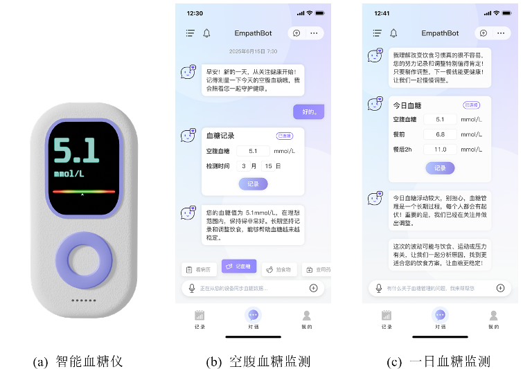
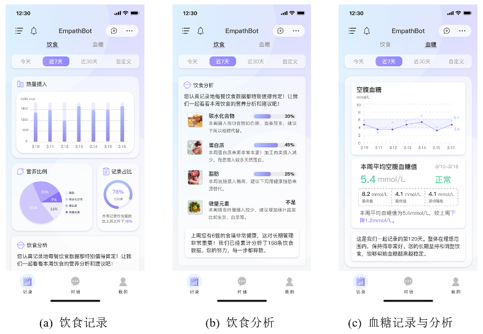
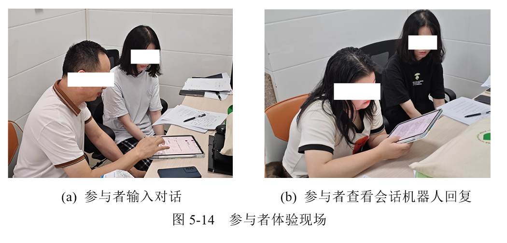
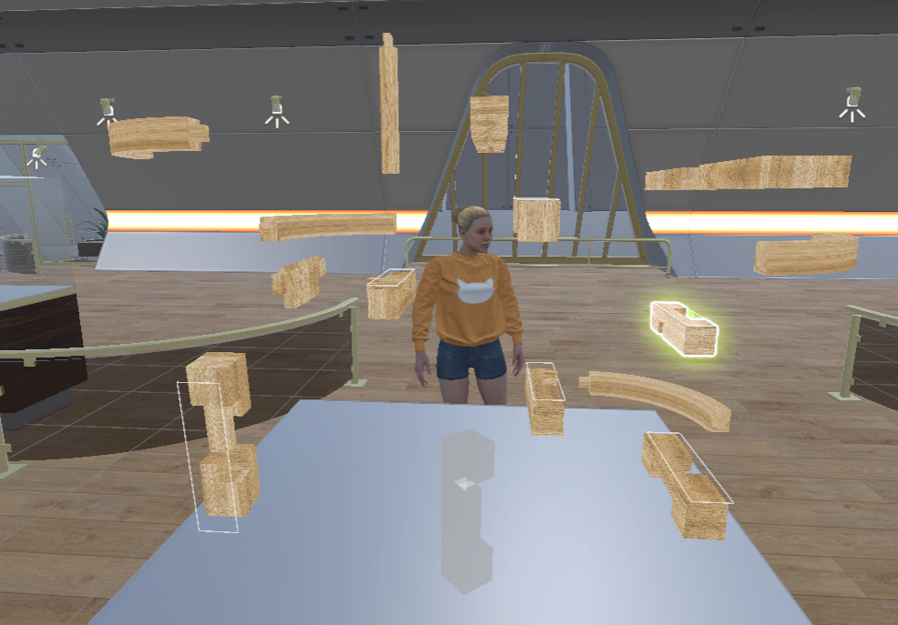
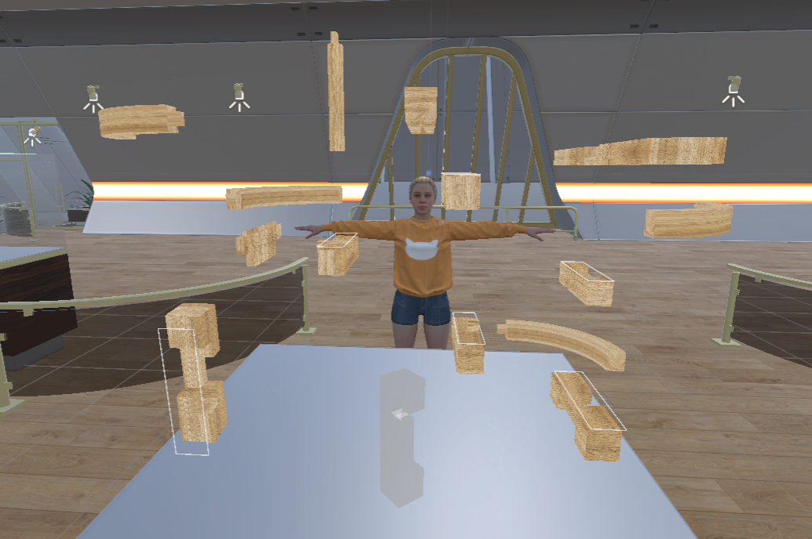
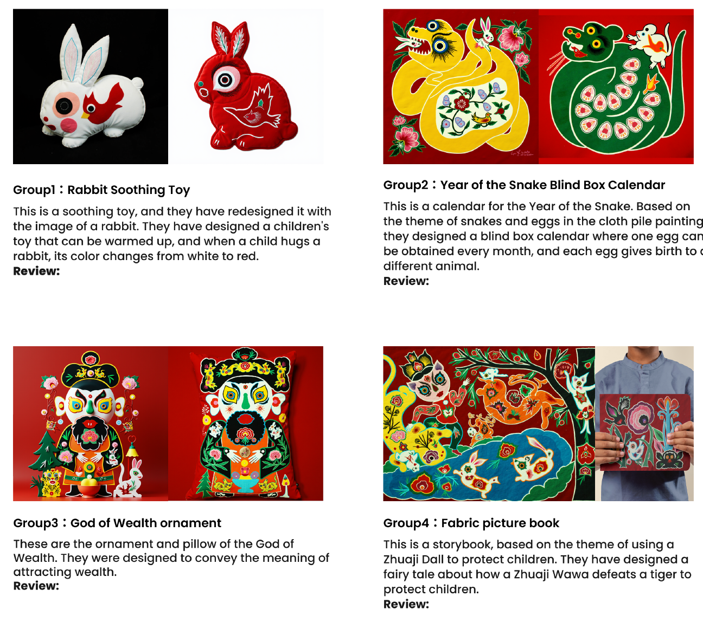
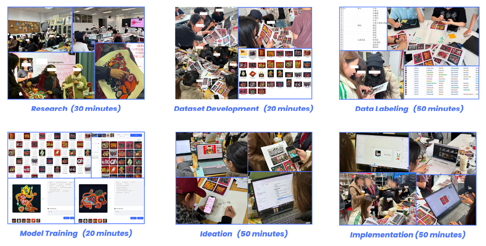
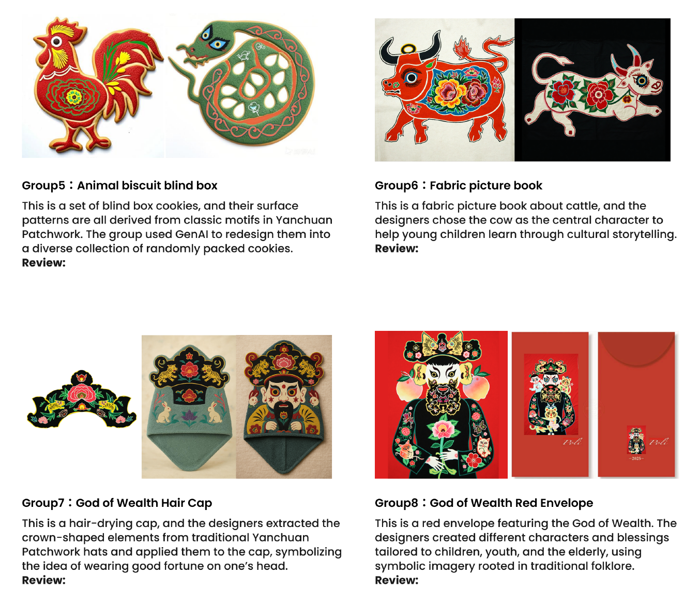

Harbin Institute of Technology · Future Design School · Shenzhen
Designing intelligent interactions for real-world human experience.
I am Qingchuan Li, a design researcher working across human-computer interaction, user experience, intelligent technologies, mixed reality, and design education.
We study how people understand, experience, and collaborate with intelligent systems.
My research is grounded in design, human-computer interaction, and user experience. I study interactive and intelligent systems in real-world contexts, with attention to usability, trust, collaboration, learning, and responsible design.
Current work spans generative AI and human-AI collaboration, mixed reality experience, external human-machine interaction for automated vehicles, design education, and user-centered research methods.
Latest Updates
May 2026
Paper published in Mindfulness, an SSCI Q1 journal
Our team’s paper “Designing for Mindfulness: Investigating College Students' Preferences and Acceptance of Virtual Reality-Based Digital Mindfulness Tools” was published in Mindfulness, an SSCI Q1 journal. PhD student Yuanlinxi Li is the first author.
Apr 2026
Paper published at CHI 2026
Our team’s paper “Harmonizing the Senses: Designing a Cross-Modal Interactive Art System to Enhance Older Adults' Affective Experiences” was published at CHI 2026 and presented in Barcelona, Spain. Graduated master’s student Sihan An is the first author.
Jan 2026
Paper accepted by International Journal of Human-Computer Interaction
Our team’s paper “Creative Pathways: Understanding the Acceptance of Technology for Digital Arts-Based Activities Among Older Chinese Adults with Mild Cognitive Impairment” was accepted by International Journal of Human-Computer Interaction, an SCI/SSCI Q1 journal. Graduated master’s student Sihan An is the first author.
Research Interests
01
Human-Computer Interaction and User Experience
Usability, experience quality, and evaluation of interactive systems in authentic use contexts.
02
Intelligent Technologies and Design Research
How people understand, trust, collaborate with, and reflect on intelligent systems.
03
Mixed Reality and Collaborative Experience
MR/VR prototypes for collaboration, configuration, decision-making, and shared experience.
04
Design Education and Innovation Methods
Design capability development, co-creation frameworks, curriculum design, and research methods.
This research line explores how older adults perceive, adopt, and interact with digital and intelligent technologies. We investigate mobile interaction behavior, navigation challenges, smart healthcare experiences, home healthcare robots, digital art therapy, and embodied exergame interaction. Through user studies, behavioral experiments, and interface evaluation, we aim to develop age-friendly and inclusive interaction principles that support usability, trust, engagement, and meaningful technology use in later life.



digital-healthtrustworthy-ai
Digital Health, Trust, and Empathetic AI
This project examines how trust, empathy, social cues, and communication styles shape users' acceptance of digital health services and intelligent care systems. Our studies cover mobile medical consultations, healthcare conversational agents, diabetes self-management chatbots, and chronic disease support systems. By combining surveys, experiments, interviews, and large-scale online data analysis, we seek to understand how AI-mediated health technologies can provide more trustworthy, empathetic, and supportive care experiences.


learning-analyticsmultimodal-data
Intelligent Learning Environments and Multimodal Analytics
This research investigates how students learn across digital, physical, and multi-device environments. We study cross-device learning behavior, cognitive load in pen-based mobile learning, intelligent advisory systems, ambient learning displays, online collaborative design, and VR-supported design education. Using field studies, behavioral experiments, eye tracking, handwriting data, gesture data, and multimodal learning analytics, we aim to design learning technologies that better support attention, collaboration, reflection, and meaningful learning.



embodied-interactionhuman-ai-creativity
Embodied, Affective, and Human-AI Creative Interaction
This project focuses on how embodied interaction, affective experience, multisensory feedback, and human-AI collaboration shape emerging forms of interaction and creativity. Our work includes embodied metaphors and multimodal feedback in exergames, cross-modal interactive art, affective robots, VR-based mindfulness tools, AI-assisted cultural heritage workflows, and generative AI for speculative design. We aim to explore how intelligent and immersive technologies can support emotional engagement, creative expression, cultural meaning-making, and human-centered experience design.
Journal of Medical Internet Research · 2023 · 88 citations
The influence of anthropomorphic cues on patients’ perceived anthropomorphism, social presence, trust building, and acceptance of health care conversational agents
Q Li, Y Luximon, J Zhang
International Journal of Design · 2018 · 91 citations
Understanding older adults’ post-adoption usage behavior and perceptions of mobile technology
Q Li, Y Luximon
Computers in Human Behavior · 2022 · 83 citations
Seeking medical advice in mobile applications: how social cue design and privacy concerns influence trust and behavioral intention in impersonal patient-physician interactions
J Zhang, Y Luximon, Q Li
International Journal of Environmental Research and Public Health · 2020 · 66 citations
Healthcare at your fingertips: the acceptance and adoption of mobile medical treatment services among Chinese users
Q Li
British Journal of Educational Technology · 2024 · 25 citations
Measuring and classifying students' cognitive load in pen-based mobile learning using handwriting, touch gestural and eye-tracking data
Q Li, Y Luximon, J Zhang, Y Song
Computers & Education · 2025 · 4 citations
Understanding college students’ cross-device learning behavior in the wild: Device ecologies, physical configurations, usage patterns, and attention issues
Q Li, Z Xu, Y Chen
Computers in Human Behavior · 2024 · 12 citations
Experiencing the body as play: Cultivating older adults’ exergame experiences using embodied metaphors and multimodal feedback
Q Li, S Yang
CHI Conference on Human Factors in Computing Systems · 2026 · 1 citation
Harmonizing the Senses: Designing a Cross-Modal Interactive Art System to Enhance Older Adults’ Affective Experiences
SH An, Y Wu, Z Zhang, Y Li, M Jiang, J Zhang, Q Li
Mindfulness · 2026
Designing for Mindfulness: Investigating College Students’ Preferences and Acceptance of Virtual Reality-Based Digital Mindfulness Tools
Y Li, Q Li
International Journal of Human-Computer Interaction · 2026
Creative Pathways: Understanding the Acceptance of Technology for Digital Arts-Based Activities Among Older Chinese Adults with Mild Cognitive Impairment
S An, Y Li, Q Li
Research Group
Qingchuan Li
Principal Investigator · Future Design School, Harbin Institute of Technology, Shenzhen
PhD Student
Class of 2026Yuanlinxi Li
Master's Students
Class of 2026Yining Wang Yaxin Zhang
Class of 2025Jingao Guo
Class of 2024Zida Han Yifan Wu Lingyu Peng Yuekai Qian Yihan Ma Ke Fan N Goran Damoh Wilfried Qasim Faizan
Class of 2023Xinyi Wang Can Chen Zihan Zhang Yuanlinxi Li Yuqi Wang
Class of 2022Zhao Xu Sihan An
Class of 2021Simin Yang
Join or collaborate with us
We welcome students and collaborators interested in human-computer interaction, intelligent systems, user experience, mixed reality, and design research.
Graduate research projects
Undergraduate research training
Interdisciplinary collaboration
Visiting student opportunities
Contact
Future Design School, Harbin Institute of Technology, Shenzhen